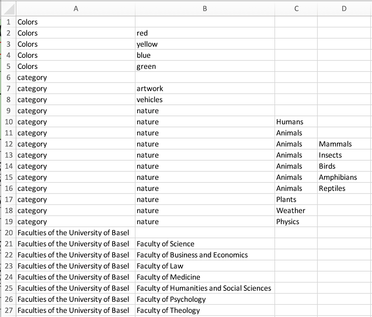

Excel File Format to Generate a JSON Project
The Folder Structure for excel2json
With the excel2json command,
a JSON project file can be created from Excel files.
To put it simple, a JSON project consists of
- 0-1 "lists" sections
- 1-n ontologies, each containing
- 1 "properties" section
- 1 "resources" section
For each of these 3 sections, one or several Excel files are necessary. The Excel files and their format are described below. If you want to convert the Excel files to JSON, it is possible to invoke a command for each of these sections separately (as described below).
But it is more convenient to use the command that creates the entire JSON project file. In order to do so, put all involved files into a folder with the following structure:
data_model_files
|-- lists
| |-- de.xlsx
| `-- en.xlsx
`-- onto_name (onto_label)
|-- properties.xlsx
`-- resources.xlsx
`json_header.xlsx` (optional)
Conventions for the folder names:
- The "lists" folder must have exactly this name, if it exists. It can also be omitted.
- Replace "onto_name" by your ontology's name, and "onto_label" by your ontology's label.
- The only name that can be chosen freely is the name of the topmost folder ("data_model_files" in this example).
- The file "json_header.xlsx" is optional. If it exists, it should be located in the top level folder.
Then, use the following command:
dsp-tools excel2json data_model_files project.json
This will create a file project.json with the lists, properties, and resources from the Excel files.
If the file "json_header.xlsx" is not provided, the "header" of the resulting JSON file is empty and thus invalid. In this case, it is necessary to add the project shortcode, shortname, longname, descriptions, and keywords by hand. Likewise, there will be no prefixes, no groups and no users in the resulting JSON file.
Continue reading the following paragraphs to learn more about the expected structure of the Excel files.
The Folder Structure for new-excel2json
The convention for the folder structure and naming remains the same as for the standard excel2json.
The Excel files containing the lists must have the word "list" in the name.
All the files containing "list" in their name will be read and processed, other files in the folder will not be included.
data_model_files
|-- lists
| |-- lists.xlsx
| `-- other_list.xlsx
| `-- list3.xlsx
`-- onto_name (onto_label)
|-- properties.xlsx
`-- resources.xlsx
`json_header.xlsx` (optional)
Then, use the following command:
dsp-tools new-excel2json data_model_files project.json
The json_header.xlsx
The header section can be filled out with the "json_header.xlsx" file. The file must be in the top level folder, and the name must be an exact match.
It is recommended to use the template.
The sheets should be filled as follows:
- Prefixes
- Both columns (prefixes and URI) are mandatory.
- At least one prefix has to be declared
- Project
- All columns: shortcode, shortname, longname are mandatory.
- Only one row may be filled.
- Description
- The langauge options are: en, de, fr, it, rm
- At least one language has to be filled.
- Only one row may be filled.
- Keywords
- At least one keyword has to be entered in the column "keywords".
- Users (Optional)
- This sheet may be omitted or left empty.
- For each user, all the columns: username, email, givenName, familyName, password, lang and role are mandatory.
- The lang has to be one of: en, de, fr, it or rm
- The role has to be one of: projectadmin, projectmember or systemadmin.
The resources Section
With the excel2resources command,
the resources section used in a data model (JSON) can be created from an Excel file.
Only XLSX files are allowed.
The resources section can be inserted into the ontology file and then be uploaded onto a DSP server.
An Excel file template can be found here
or also in the
data_model_files folder of 00A1-import-scripts.
It is recommended to work from the template.
The expected worksheets of the Excel file are:
classes: a table with all resource classes intended to be used in the resulting JSONclass1,class2,...: a table for each resource class named after its name. If no cardinality should be provided for a class then the sheet can be left empty or omitted entirely.
The worksheet called classes must have the following structure:
The expected columns are:
name(mandatory): Unique identifier for the resource classlabel_en,label_de,label_fr,label_it,label_rm(one language mandatory): Label of the resource class that will be displayed in DSP-APP. Should be rather short.comment_en,comment_de,comment_fr,comment_it,comment_rm(optional): Description of the resource class. Can be longer than the label.super(mandatory): The type of this resource class, i.e. the base resource class/classes that this resource class is derived from. Must be one of the values listed in the documentation. If more than one: separated by commas.
The optional columns may be omitted in the Excel.
All other worksheets, one for each resource class, have the following structure:

The expected columns are:
Property(mandatory): The unique identifier of the propertyCardinality(mandatory): Indicates how often the property may occur. The possible values are:"1": exactly once (mandatory one value and only one)"0-1": The value may be omitted, but can occur only once."1-n": At least one value must be present, but multiple values may be present."0-n": The value may be omitted, but may also occur multiple times.
gui_order(optional): By default, DSP-APP displays the properties in the order how they are listed in the Excel sheet. If you prefer another order, you can make a numbering in this column. Example: You order the property names alphabetically in the Excel, but they should be displayed in another order in DSP-APP.
The properties Section
With the excel2properties command,
the properties section used in a data model (JSON) can be created from an Excel file.
Only the first worksheet of the Excel file is considered and only XLSX files are allowed.
The properties section can be inserted into the ontology file and then be uploaded onto a DSP server.
An Excel file template can be found here
or also in the data_model_files folder of
00A1-import-scripts.
It is recommended to work from the template.
The Excel sheet must have the following structure:
The expected columns are:
name(mandatory): Unique identifier for the propertylabel_en,label_de,label_fr,label_it,label_rm: (one language mandatory): Label of the property that will be displayed in DSP-APP. Should be rather short.comment_en,comment_de,comment_fr,comment_it,comment_rm(optional): Description of the property. Can be longer than the label.super(mandatory): The type of this property, i.e. the base property/properties that this property is derived from. Must be one of the values listed in the documentation. If more than one: separated by commas.object(mandatory): Target value of this property. Must be one of the values listed in the documentation.- If the property is derived from
hasValue, the type of the property must be further specified by the object it takes, e.g.TextValue,ListValue, orIntValue. - If the property is derived from
hasLinkTo, theobjectspecifies the resource class that this property refers to.
- If the property is derived from
subject(optional): The subject defines the resource class the property can be used on. It has to be provided as prefixed name of the resource class.gui_element(mandatory): The graphic component, defines how this property should be displayed. Depends on the value ofobject: Read the documentation of the respectiveobjectto learn whichgui_elementcan be used.gui_attributes(only mandatory for lists): Somegui_elements need further specifications. Read the documentation of the respectiveobjectto learn if yourgui_elementneeds agui_attributes. Form:attr: value, attr: value.
The optional columns may be omitted in the Excel.
For backwards compatibility,
files with column titles hlist, en, de, fr, it, or rm are valid, but deprecated.
The lists Section
With the excel2lists command,
the lists section of a JSON project file can be created from one or several Excel files.
The lists can then be inserted into a JSON project file and uploaded to a DSP server.
The following example shows how to create the "lists" section
from the two Excel files de.xlsx and en.xlsx
which are located in a directory called listfolder:
dsp-tools excel2lists listfolder lists.json
The Excel sheets must have the following structure:


Some notes:
- The data must be in the first worksheet of each Excel file.
- It is important that all Excel files have the same structure. So, the translation of a label in the second Excel file has to be in the exact same cell as the one in the first Excel file.
- Only Excel files with file extension
.xlsxare considered. - The file name must consist of the language label, e.g.
de.xlsx/en.xlsx. - The language has to be one of {
de,en,fr,it,rm}. - As node name, a simplified version of the English label is taken. If English is not available, one of the other languages is taken.
- If there are two nodes with the same name, an incrementing number is appended to the name.
- After the creation of the list, a validation against the JSON schema for lists is performed. An error message is printed out if the list is not valid.
It is recommended to work from the following templates:
- en.xlsx: File with the English labels
- de.xlsx: File with the German labels
- or alternatively from the
data_model_filesfolder of00A1-import-scripts
The output of the above command, with the template files, is:
{
"lists": [
{
"name": "colors",
"labels": {
"de": "Farben",
"en": "colors"
},
"comments": {
"de": "Farben",
"en": "colors"
},
"nodes": [
{
"name": "red",
"labels": {
"de": "rot",
"en": "red"
}
},
"..."
]
},
{
"name": "category",
"labels": {
"de": "Kategorie",
"en": "category"
},
"comments": {
"de": "Kategorie",
"en": "category"
},
"nodes": [
{
"name": "artwork",
"labels": {
"de": "Kunstwerk",
"en": "artwork"
}
},
"..."
]
},
{
"name": "faculties-of-the-university-of-basel",
"labels": {
"de": "Fakultten der Universitt Basel",
"en": "Faculties of the University of Basel"
},
"comments": {
"de": "Fakultten der Universitt Basel",
"en": "Faculties of the University of Basel"
},
"nodes": [
{
"name": "faculty-of-science",
"labels": {
"de": "Philosophisch-Naturwissenschaftliche Fakultt",
"en": "Faculty of Science"
}
},
"..."
]
}
]
}
The lists Section for new-excel2json and new-excel2lists
With the new-excel2lists command,
the lists section of a JSON project file can be created from one or several Excel files.
The lists can then be inserted into a JSON project file and uploaded to a DSP server.
The following example shows how to create the "lists" section
with Excel files that are located in a directory called listfolder.
The Excel files must contain the word "list" in the name. All the files containing that word will be included.
Files that do not contain that word will not be considered.
dsp-tools new-excel2lists listfolder lists.json
The Excel sheets must have the following structure:
Formal requirements of the Excel format
- One Excel file may contain several lists.
- Per Excel sheet only one list is allowed. The name of the sheet is not relevant, but must be unique within one Excel file.
- The list name (i.e. the content of the columns
en_list/de_list/...) must be unique in one project.
Columns
ID (Optional)- Column where a custom ID for the node or list can be entered.
This ID will become the
nameof the list/node in the JSON file. - The ID must be unique in the entire project.
- If this field is left empty, an auto-ID will be generated.
- In case of duplicate IDs, an auto-ID will be generated, which includes the names of the ancestors of the node.
For example:
list1:node1:node1.1for the nodenode1.1inlist1list2:node1:node1.1for the nodenode1.1inlist2
- Column where a custom ID for the node or list can be entered.
This ID will become the
<language>_list: At least one column with the name of the list in that language.<language>_number: At least one column which specifies a node level. It starts with 1 for the highest node hierarchy, and can go on infinitely.
Languages
- The allowed language tags are:
de,en,fr,it,rm - At least one language must be used.
- There is no limit to the number of columns (i.e. node hierarchies).
-
Within one list, i.e. Excel sheet, all nodes must be consistently translated into the same languages.
-
Correct:
-
Incorrect, because
de_listis specified, butde_1is missing:
-
-
Within one list, i.e. Excel sheet, all nodes must be translated into the same languages. This example is incorrect, because there is no English translation for
Knoten 1: -
The use of language does not have to be consistent across all lists. For example, it is correct if "list1" is translated into English and German, but "list2" is only translated into English.
Rows
- Each sheet must contain at least two rows.
- The sheet must be ordered correctly as shown in the example above.
-
The order in the Excel corresponds to the order in the JSON file and the DSP-APP. This example is incorrect, because the second column is unordered:
-
The first row of the sheet, directly under the title, must only contain the information for the list itself. It must not contain anything in the other cells.
- Each successive row corresponds to one list node. Each node must have its own row.
-
In this example,
Node 1does not have its own row, which is incorrect.Node 2is correctly done.
It is recommended to work from the following template: new_lists.xlsx